¿Problemas con su computadora?
¿De qué trata la actualización SSD?
Sí ha notado problemas con su computadora, que encienda lento, tarda mucho en abrir programas o si está cansado de seguir usando su unidad de disco duro, desfragmentarlo y ser cuidadoso de no golpearla mientras se esté ejecutando, puede ser el momento de actualizar su PC a una unidad de estado sólido (SSD).Los SSD arrancan y cargan los juegos, los programas y el sistema operativo como tal con más rapidez. Notará que su sistema operativo va a ir más fluido, también son más durables, usan menos energía y producen menos calor que un HDD.

Sí usted está inconforme con el desempeño de su computadora, en definitiva este servicio le va a ayudar enormemente.
Consulte sin compromiso
Contactá con nosotros acá